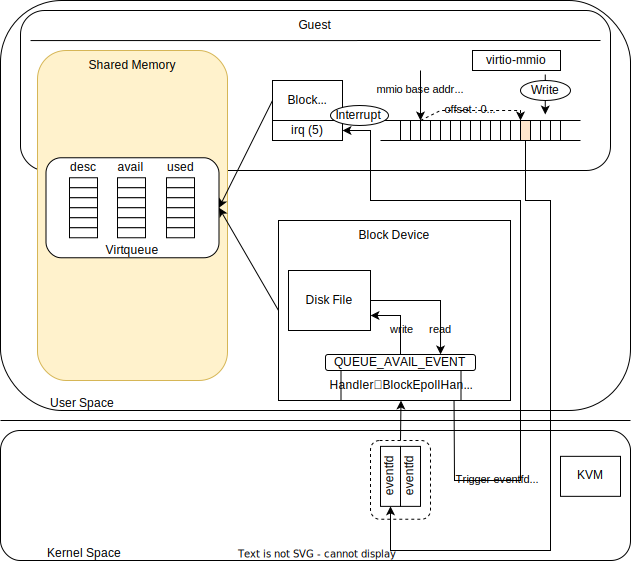

Implement virtio-blk device
In this section, we will implement the Block device used by the guest's virtio-blk. The specification is similar to Virtio and is officially published by OASIS in the Block Device section. However, please note that this implementation may not be fully compliant with this specification.
Before proceeding with this section, make sure you have read the previous sections as the concepts introduced earlier will be used without further explanation here. Additionally, please read the Implement virtio-net device from the previous section as this section may omit details that overlap with the virtio-net implementation.
Mechanism of virtio-blk
In virtio-blk, a single Virtqueue is used to represent DISK Read/Write from the guest. Unlike virtio-net, there are no external factors (such as receiving data from Tap), and it is purely driven by I/O requests from the guest. Therefore, it operates with a minimum of one Virtqueue. Although the specification allows for scaling the number of Virtqueues, we have not implemented it for simplicity.
In the following sections, we will explain the implementation details based on code examples.
Implementation Details of virtio-blk
The implementation of virtio-blk can be found in block.rs. The roles and relationships of various structures are shown in the following diagram:

As mentioned earlier, the concrete implementation depends on the specific device. However, it is abstracted by the VirtioDevice trait, so everything else, apart from the details of various device implementations, works the same as shown for virtio-net. Therefore, this diagram mostly resembles the internal details of the Block Device, with minor differences.
During initialization, queries such as Device Type and Features are responded to by the specific implementation of the Block device. Similar to the Net device, the addresses of the Virtqueue on the Guest's address space are set up and provided. Once the initialization steps are completed, the activate function is executed.
For the Block device, like the Net device, various file descriptors are registered with epoll during initialization. Handlers (BlockEpollHandler) are set up to be executed when epoll triggers, just like in the case of the Net device. In the Block device, to emulate I/O, a host-side file (to be operated as a BlockDevice) is opened, and read/write requests from the guest are performed on it. The file descriptors registered with epoll include an eventfd for the Virtqueue and another eventfd for stopping the system in case of unexpected situations, making a total of two file descriptors.
In comparison to the Net device, you can see that the Tap device has been replaced by a file, and the number of eventfds has changed. However, apart from these changes, there are no significant differences in the behavior.
For the Block device, a single Virtqueue is associated with the firing of an eventfd. Therefore, we will focus on this process in the following sections.
I/O Requests in virtio-blk
Before delving into the implementation details, let's explain the I/O requests in virtio-blk.
As mentioned earlier, virtio-blk handles I/O requests from the guest through a single Virtqueue. However, guest-originated I/O requests can be broadly categorized into two types: Read and Write, and the processing required for each of them is significantly different. The host must determine how to recognize these requests and emulate the I/O correctly.
To explain this, we need to understand how the Descriptor Table is used in virtio-blk. The data sent by the guest to Virtqueue follows the structure below:
#![allow(unused)] fn main() { struct virtio_blk_req { le32 type; le32 reserved; le64 sector; u8 data[]; u8 status; }; }Source: Block Device: Device Operation
In practice, this is created as three entries in the Descriptor Table, with each entry being linked by the next field.
- The first
Descriptorentry points to the addresses containing thetype,reserved, andsectordata. - The second
Descriptorentry points to the beginning of the data area where data is written. - The third
Descriptorentry points to the address where thestatuswill be written by Host.

The type field indicates the type of I/O (e.g., read, write, or other I/O requests). By examining this value, the host can determine how to behave differently.
In the case of a read, the second Descriptor entry points to the area where the host should store the data it reads from the Disk. The host can determine the sector to read from based on the sector value and read the necessary amount of data (desc.len of the second Descriptor).
In the case of a write, the second Descriptor entry contains the data that should be written to the Disk. The host reads the data and writes it to the sector specified by the sector value.
The third Descriptor entry is used to write status information, indicating whether the I/O was successful or failed.
In summary, the type of Disk I/O and the necessary data or buffers are provided through Virtqueue. It is the responsibility of the host to interpret this according to the specification, emulate the I/O correctly, and provide the appropriate status.
Implementation of Disk I/O in ToyVMM
Let's explain the guest-originated Disk I/O requests in the context of the implementation. Everything else is essentially the same as the Tx case of the Net Device, so let's start with the point where the processing is delegated to the host through QueueNotify.
Writing to MMIO's QueueNotify triggers an EventFd, which is picked up by epoll monitoring. Specifically, the handler for QUEUE_AVAIL_EVENT is executed. In practice, the process_queue function is called, and if its return value is true, the signal_used_queue function is called.
The signal_used_queue function simply sends an interrupt to the guest, so the important part to examine is the process_queue function.
In the process_queue function, the following steps are performed:
- Initialize necessary variables:
used_desc_heads[(u16, u32), 256]: Stores the index and data length of processedDescriptors. This is used to populate theused_ringat the end ofprocess_queue.used_count: Keeps track of how many I/O requests from the guest have been processed.
- Iterate through Virtqueue until it stops, repeating steps 2 to 4.
- Retrieve the
Descriptorpointed to by theAvailable Ring, parse it according to thevirtio-blkspecification, and create aRequeststructure. TheRequeststructure contains parsed information such as request type, sector information, data address, data length, and status address. - Call the
executefunction, which performs the I/O request based on the content of theRequeststructure. For successful I/O, it returns the length of data read (for Read) or 0 (for Write and other types). This value is used to write to theused_ring. - Write the status (success or failure of I/O) to the status address and write necessary information to the
used_ring. - If one or more requests have been processed, return
trueas the function's return value.
The following diagrams illustrate the process when the guest-originated I/O request is a Read:

And here's the process when the guest-originated I/O request is a Write:

Verification of virtio-blk Operation
Now, let's perform a practical verification to demonstrate the functionality. Instead of using initrd.img, we will use an Ubuntu rootfs image similar to Firecracker, allowing us to boot the Ubuntu OS directly. With the implementation of the virtio-blk BlockDevice, we can recognize the Ubuntu rootfs image as /dev/vda in the VM. To boot from this Ubuntu image, we need to specify root=/dev/vda in the VM's kernel cmdline.
# Run ToyVMM with kernel and rootfs (no initrd.img)
$ sudo -E cargo run -- boot_kernel -k vmlinux.bin -r ubuntu-18.04.ext4
...
# You can verify that the launched VM is ubuntu-based.
root@7e47bb8f2f0a:~# uname -r
4.14.174
root@7e47bb8f2f0a:~# cat /etc/os-release
NAME="Ubuntu"
VERSION="18.04.1 LTS (Bionic Beaver)"
ID=ubuntu
ID_LIKE=debian
PRETTY_NAME="Ubuntu 18.04.1 LTS"
VERSION_ID="18.04"
HOME_URL="https://www.ubuntu.com/"
SUPPORT_URL="https://help.ubuntu.com/"
BUG_REPORT_URL="https://bugs.launchpad.net/ubuntu/"
PRIVACY_POLICY_URL="https://www.ubuntu.com/legal/terms-and-policies/privacy-policy"
VERSION_CODENAME=bionic
UBUNTU_CODENAME=bionic
# And you can also find that this VM mount /dev/vda as rootfs.
root@7e47bb8f2f0a:~# lsblk
NAME MAJ:MIN RM SIZE RO TYPE MOUNTPOINT
vda 254:0 0 384M 0 disk /
root@7e47bb8f2f0a:~# ls -lat /
total 36
drwxr-xr-x 12 root root 360 Aug 14 13:47 run
drwxr-xr-x 11 root root 2460 Aug 14 13:46 dev
dr-xr-xr-x 12 root root 0 Aug 14 13:46 sys
drwxrwxrwt 7 root root 1024 Aug 14 13:46 tmp
dr-xr-xr-x 57 root root 0 Aug 14 13:46 proc
drwxr-xr-x 2 root root 3072 Jul 20 2021 sbin
drwxr-xr-x 2 root root 1024 Dec 16 2020 home
drwxr-xr-x 48 root root 4096 Dec 16 2020 etc
drwxr-xr-x 2 root root 1024 Dec 16 2020 lib64
drwxr-xr-x 2 root root 5120 May 28 2020 bin
drwxr-xr-x 20 root root 1024 May 13 2020 .
drwxr-xr-x 20 root root 1024 May 13 2020 ..
drwxr-xr-x 2 root root 1024 May 13 2020 mnt
drwx------ 4 root root 1024 Apr 7 2020 root
drwxr-xr-x 2 root root 1024 Apr 3 2019 srv
drwxr-xr-x 6 root root 1024 Apr 3 2019 var
drwxr-xr-x 10 root root 1024 Apr 3 2019 usr
drwxr-xr-x 9 root root 1024 Apr 3 2019 lib
drwx------ 2 root root 12288 Apr 3 2019 lost+found
drwxr-xr-x 2 root root 1024 Aug 21 2018 opt
As mentioned above, it can be seen that the VM is running the Ubuntu-based OS passed as /dev/vda, and after logging in, it is confirmed that it is an Ubuntu-based OS, and the rootfs is correctly mounted as intended. Furthermore, unlike the previous initrd.img, which had volatile rootfs, in this case, the rootfs persisted as a DISK is used for booting the VM, allowing files created within the VM to be retained across VM reboots.
# Create a sample file (hello.txt) in the first VM boot and reboot.
root@7e47bb8f2f0a:~# echo "HELLO UBUNTU" > ./hello.txt
root@7e47bb8f2f0a:~# cat hello.txt
HELLO UBUNTU
root@7e47bb8f2f0a:~# reboot -f
Rebooting.
# After the second boot, you can also find 'hello.txt'.
Ubuntu 18.04.1 LTS 7e47bb8f2f0a ttyS0
7e47bb8f2f0a login: root
Password:
Last login: Mon Aug 14 13:57:27 UTC 2023 on ttyS0
Welcome to Ubuntu 18.04.1 LTS (GNU/Linux 4.14.174 x86_64)
* Documentation: https://help.ubuntu.com
* Management: https://landscape.canonical.com
* Support: https://ubuntu.com/advantage
This system has been minimized by removing packages and content that are
not required on a system that users do not log into.
To restore this content, you can run the 'unminimize' command.
root@7e47bb8f2f0a:~# cat hello.txt
HELLO UBUNTU
With the implementation of both virtio-net and virtio-blk devices, you have successfully created a minimal VM with the necessary functionality.